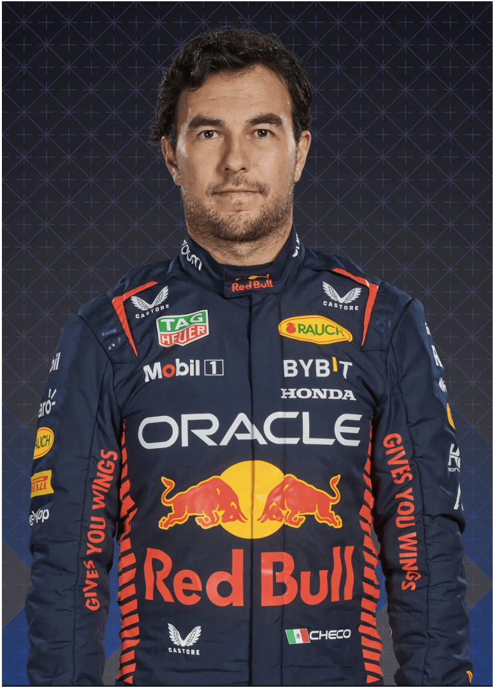

Red Bull Racing
|

1 Max Verstappen |

11 Sergio Perez |
|---|
Red Bull nisu bili nepoznanica u Formuli 1 - kao sponzori - pre nego što su se zvanično pridružili kao fabrički tim 2004. Ipak, obim njihovog uspeha tokom naredne decenije bio je impresivan. Nakon prvog postolja 2006. godine, tim je dostigao vrhunac 2009. godine, osvojivši šest pobeda i zauzevši drugo mesto u konstruktorskom poretku. U naredne četiri sezone bili su sila koja se nezaustavljivo kretala ka osvajanju uzastopnih titula između 2010. i 2013. godine, pri čemu je Sebastian Fetel postao najmlađi četvorostruki šampion u sportu. Sada ponovo osvajaju tu slavu s jednako uzbudljivim talentom - nazvanim Max Verstappen...
Nakon što su se suprotstavili ranoj izazovu Ferrarija, dominirali su osvajanjem prvog dvostrukog naslova od 2013. godine, pri čemu je Max Verstappen ostvario rekordnih 15 pobeda i odbranio vozačku titulu. Jedini oblak na horizontu je kazna od 7 miliona dolara i smanjenje budućeg testiranja u vetrotunelu zbog prekoračenja budžetskog ograničenja za 2021. godinu.
Obezbeđuju svoju prvu vozačku titulu od 2013. godine, pobedivši na 11 od 22 trke, i pružaju snažan otpor Mercedesu u intenzivnoj - ponekad i gorkoj - borbi među konstruktorima. Novi timski kolega Sergio Perez pruža neprocenjivu podršku uspešnom pohodu ka tituli Maxa Verstappena.
Usamljeni drugi u poretku, dosledno ispred srednjeg dela grida, ali retko u mogućnosti da se meri sa brzinom šampiona Mercedesa. Max Verstappen briljira - sa dve pobede i još devet podijuma - ali Alex Albon je otpušten za 2021. godinu nakon samo dva pojavljivanja među prva tri.
Tranzicija sa Renaulta na Hondin pogon izuzetno je glatka, a četiri pobede Maxa Verstappena obezbeđuju gotovo identičan broj bodova kao 2018. godine. Menjaju Pierrea Gaslyja sredinom sezone u korist debitanta Alex Albona, a napredak ka kraju sezone podiže nade u stvarni izazov za titulu u 2020. godini.
Pročitajte vodič kroz godine Ferarija